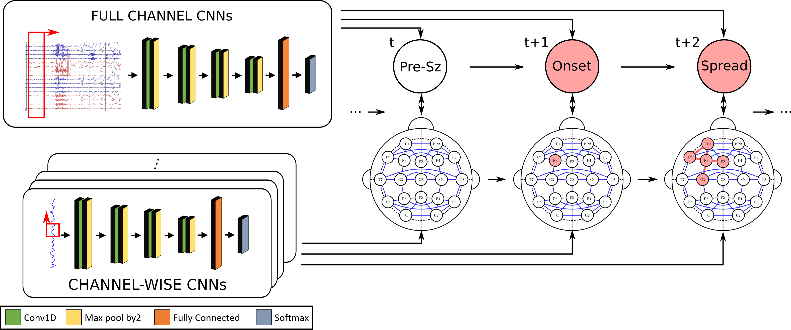
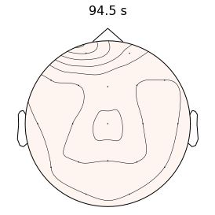
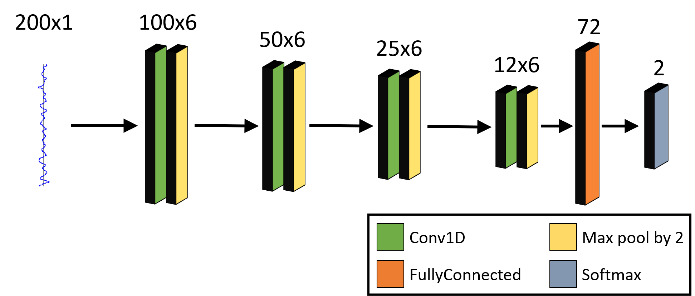
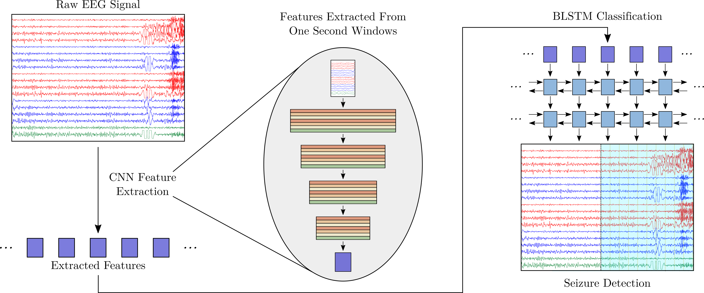

My research work at Johns Hopkins has focused primarily on developing machine learning algorithms with clinical applications to epilepsy. Specifically, my work focuses on the complimentary tasks of seizure detection and onset localization from electroencephalography (EEG) recordings. Using techiniques from deep learning, graphical modeling, and signal processing, I have developed algorithms to analyze raw EEG signals for seizure content. It is my hope that these tools will one day assist clinicians in the treatment of epilepsy.

In focal epilepsy, localizing the onset of seizure activity is an important step in the treatment process. Depending on the location of the onset zone, treatment options may vary. In my work at JHU, I have developed models capable of determining the onset zone from EEG seizure recordings. This work uses graphical modeling to design models capable of tracking seizure propagation. Using a hand designed network of connections, these models track seizure activity as it spreads spatially through the EEG recording. By tracking the spread of seizure activity, the focal onset zone can be determined.


In recent years deep neural networks have emerged as power feature extraction tools. The ability of neural networks to learn latent representations directly from raw data has led to their application to a variety of domains. In my work, I have investigated the application of Convolutional Neural Networks (CNNs) to the analysis of raw EEG signals. I have applied CNNs to both the entire multi-channel EEG recording for accurate seizure detection,as well as to individual channels of the EEG to track seizure activity as it spreads. In both instances, CNNs have demonstrated the ability to learn powerful representations of the EEG directly from the raw signal.

The clinical treatment of epilepsy requires the collection of EEG seizure recordings. As seizures can occur infrequently, days long EEG recording in the epilepsy monitoring unit may be needed to obtain an adequate number of seizures. Analyzing these recordings is a time consuming process which requires a high degree of training. Accurate machine learning based detection of seizures in these recordings has the potential to aid in clinical review.
In order to perform fast and accurate seizure detection, I have designed a hybrid CNN Recurrent Neural Network (RNN) model for seizure detection. This model performs feature extraction from short windows of raw EEG signal using a CNN. While these features can be classified independently, the ability to identify seizure activity as it evolves over time increases the accuracy of machine learning methods. To track this evolution, I have coupled the CNN network with a bidirectional long short-term memory (BLSTM) network. This hybrid CNN-BLSTM combines the ability to analyze the raw EEG signal at the level of short windows with the ability to learn the evolution of seizure activity to perform accurate seizure detection.
While deep learning is a powerful tool in machine learning, building neural networks that incorporate existing hypotheses of medical phenomenon is difficult. As such, my research has focused on using graphical modeling to develop models that encode the spread of focal epileptic seizures. Designing end-to-end neural network models capable of determining the focal onset zone is an interesting problem calling for the development of new techinques in deep learning.
While EEG seizure recordings are often the first modality used for epileptic onset zone localization, further refinement of this localization requires different imaging and recording modalities. MRI and PET scanning can allow for the identification of any physiological abnormalities that might indicate a likely onset zone. Furthermore, seizure semiology can offer an indication of the likely onset zone, as seizures originating from different areas of the brain manifest different clinical symptoms. Developing multi-modal models capable of fusing information from these different sources can further aid in accurate onset zone localization.